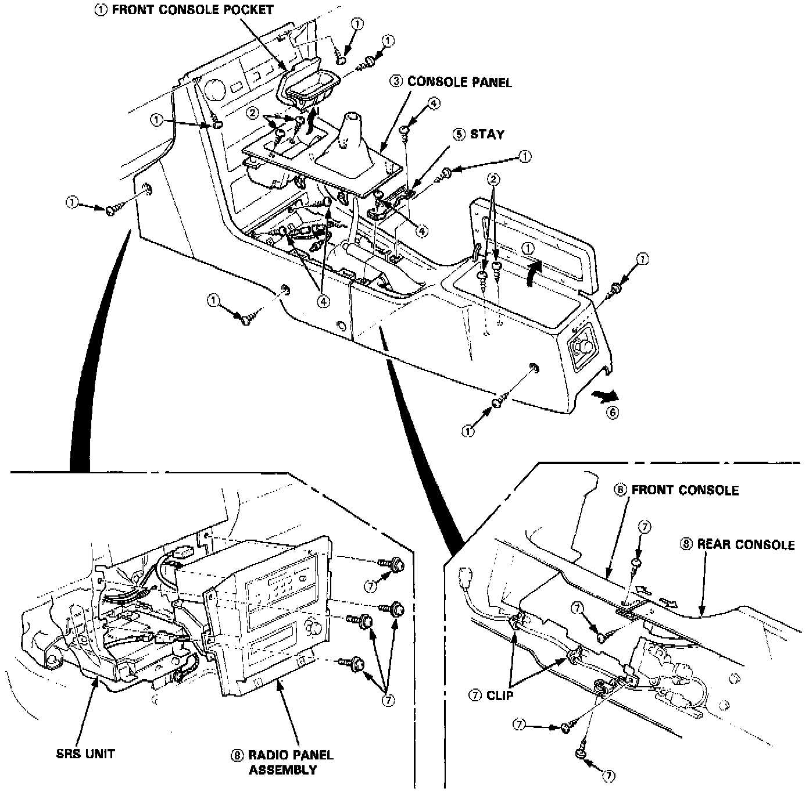

Console: Service and Repair

NOTE: SRS wire harness is routed near the console.
WARNING: All SRS harness and connectors are colored Yellow. Do not use electrical test equipment on these circuits.
CAUTION: Be careful not to damage SRS wire harness when servicing the console.
CONSOLE REPLACEMENT
Disassemble in numbered sequence (Refer to image), noting the following:
- Lift up the parking brake lever.
- After removing the front console, disconnect the wire harness inside the console.
- For manual transmission models, remove the shift lever knob.